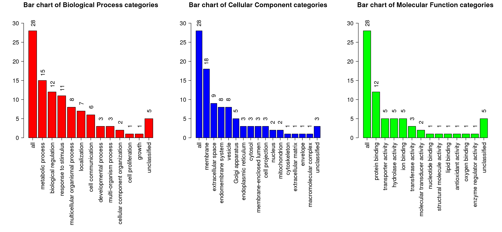

Summary (Result Download)
Enrich method: ORAOrganism:hsapiens
Enrichment Categories: geneontology_Biological_Process
Interesting gene list: differentiated_genes_sd_1532037889.txt. ID type: genesymbol
The interesting gene list contains 32 user IDs in which 28 user IDs are unambiguously mapped to the unique Entrez Gene IDs and 4 user IDs are mapped to multiple Entrez Gene IDs or could not be mapped to any Entrez Gene ID. The GO Slim summary are based upon the 28 unique Entrez Gene IDs.
Among the 28 unique Entrez Gene IDs, 25 IDs are annotated to the selected functional categories and also in the reference gene list, which are used for the enrichment analysis.
Reference gene list: uploads/background_genes_1532037889.txt ID type: genesymbol
The reference gene list contains 5000 IDs in which 4627 IDs are unambiguously mapped to the unique Entrez Gene IDs and 373 IDs are mapped to multiple Entrez Gene IDs or could not be mapped to any Entrez Gene ID.
Among the 4627 unique Entrez Gene IDs, 4020 IDs are annotated to the selected functional categories, which are used as the reference for the enrichment analysis.
Parameters for the enrichment analysis:
- Minimum number of Entrez Gene IDs in the category:5
- Maximum number of Entrez Gene IDs in the category:2000
- FDR Method:BH
- Significance Level: Top10
Mapped User IDs
| userid | Gene Symbol | Gene Name | Entrez Gene |
|---|---|---|---|
| PDZK1IP1 | PDZK1IP1 | PDZK1 interacting protein 1 | 10158 |
| MSLN | MSLN | mesothelin | 10232 |
| B3GNT3 | B3GNT3 | UDP-GlcNAc:betaGal beta-1,3-N-acetylglucosaminyltransferase 3 | 10331 |
| CLDN16 | CLDN16 | claudin 16 | 10686 |
| KLK11 | KLK11 | kallikrein related peptidase 11 | 11012 |
| LYPD2 | LYPD2 | LY6/PLAUR domain containing 2 | 137797 |
| CYP4B1 | CYP4B1 | cytochrome P450 family 4 subfamily B member 1 | 1580 |
| NXNL2 | NXNL2 | nucleoredoxin-like 2 | 158046 |
| LIPH | LIPH | lipase H | 200879 |
| GPR12 | GPR12 | G protein-coupled receptor 12 | 2835 |
| CXCL17 | CXCL17 | C-X-C motif chemokine ligand 17 | 284340 |
| HTR3A | HTR3A | 5-hydroxytryptamine receptor 3A | 3359 |
| LCN2 | LCN2 | lipocalin 2 | 3934 |
| SCGB2A1 | SCGB2A1 | secretoglobin family 2A member 1 | 4246 |
| VGLL1 | VGLL1 | vestigial like family member 1 | 51442 |
| RHBDL2 | RHBDL2 | rhomboid like 2 | 54933 |
| HRASLS2 | HRASLS2 | HRAS like suppressor 2 | 54979 |
| GSDMC | GSDMC | gasdermin C | 56169 |
| KLK10 | KLK10 | kallikrein related peptidase 10 | 5655 |
| PTK6 | PTK6 | protein tyrosine kinase 6 | 5753 |
| CYP4F11 | CYP4F11 | cytochrome P450 family 4 subfamily F member 11 | 57834 |
| SLC28A3 | SLC28A3 | solute carrier family 28 member 3 | 64078 |
| SLC5A1 | SLC5A1 | solute carrier family 5 member 1 | 6523 |
| UCA1 | UCA1 | urothelial cancer associated 1 (non-protein coding) | 652995 |
| SLPI | SLPI | secretory leukocyte peptidase inhibitor | 6590 |
| MUC5B | MUC5B | mucin 5B, oligomeric mucus/gel-forming | 727897 |
| PLEKHN1 | PLEKHN1 | pleckstrin homology domain containing N1 | 84069 |
| MUC16 | MUC16 | mucin 16, cell surface associated | 94025 |
User IDs mapped to multiple Entrtez IDs or not mapped
| userid |
|---|
| WBSCR26 |
| C10orf81 |
| LOC121838 |
| ANXA8L2 |
GOSlim summary for the user list genes
Each Biological Process, Cellular Component and Molecular Function category is represented by a red, blue and green bar, repectively.The height of the bar represents the number of user list genes observed in the category. 
Detailed information of the enriched categories
The statistics

- C: the number of reference genes in the category
- O: the number of genes in the user gene list and also in the category
- E: The expected number in the category
- R: ratio of enrichment
- PValue: p value from hyergeometric test
- FDR: FDR from BH
- GO:0016266 O-glycan processing
- GO:0006493 protein O-linked glycosylation
- GO:0006486 protein glycosylation
- GO:0043413 macromolecule glycosylation
- GO:0070085 glycosylation
- GO:0009101 glycoprotein biosynthetic process
- GO:0009109 coenzyme catabolic process
- GO:0009635 response to herbicide
- GO:0015858 nucleoside transport
- GO:0061099 negative regulation of protein tyrosine kinase activity
| ID:GO:0016266 Name:O-glycan processing | |||
|---|---|---|---|
| C=32; O=3; E=0.2; R=15.07; PValue=9.36e-04; FDR=1e+00 | |||
| userid | Gene Symbol | Gene Name | Entrez Gene |
| B3GNT3 | B3GNT3 | UDP-GlcNAc:betaGal beta-1,3-N-acetylglucosaminyltransferase 3 | 10331 |
| MUC5B | MUC5B | mucin 5B, oligomeric mucus/gel-forming | 727897 |
| MUC16 | MUC16 | mucin 16, cell surface associated | 94025 |
| ID:GO:0006493 Name:protein O-linked glycosylation | |||
|---|---|---|---|
| C=39; O=3; E=0.24; R=12.37; PValue=1.68e-03; FDR=1e+00 | |||
| userid | Gene Symbol | Gene Name | Entrez Gene |
| B3GNT3 | B3GNT3 | UDP-GlcNAc:betaGal beta-1,3-N-acetylglucosaminyltransferase 3 | 10331 |
| MUC5B | MUC5B | mucin 5B, oligomeric mucus/gel-forming | 727897 |
| MUC16 | MUC16 | mucin 16, cell surface associated | 94025 |
| ID:GO:0006486 Name:protein glycosylation | |||
|---|---|---|---|
| C=78; O=3; E=0.49; R=6.18; PValue=1.19e-02; FDR=1e+00 | |||
| userid | Gene Symbol | Gene Name | Entrez Gene |
| B3GNT3 | B3GNT3 | UDP-GlcNAc:betaGal beta-1,3-N-acetylglucosaminyltransferase 3 | 10331 |
| MUC5B | MUC5B | mucin 5B, oligomeric mucus/gel-forming | 727897 |
| MUC16 | MUC16 | mucin 16, cell surface associated | 94025 |
| ID:GO:0043413 Name:macromolecule glycosylation | |||
|---|---|---|---|
| C=78; O=3; E=0.49; R=6.18; PValue=1.19e-02; FDR=1e+00 | |||
| userid | Gene Symbol | Gene Name | Entrez Gene |
| B3GNT3 | B3GNT3 | UDP-GlcNAc:betaGal beta-1,3-N-acetylglucosaminyltransferase 3 | 10331 |
| MUC5B | MUC5B | mucin 5B, oligomeric mucus/gel-forming | 727897 |
| MUC16 | MUC16 | mucin 16, cell surface associated | 94025 |
| ID:GO:0070085 Name:glycosylation | |||
|---|---|---|---|
| C=78; O=3; E=0.49; R=6.18; PValue=1.19e-02; FDR=1e+00 | |||
| userid | Gene Symbol | Gene Name | Entrez Gene |
| B3GNT3 | B3GNT3 | UDP-GlcNAc:betaGal beta-1,3-N-acetylglucosaminyltransferase 3 | 10331 |
| MUC5B | MUC5B | mucin 5B, oligomeric mucus/gel-forming | 727897 |
| MUC16 | MUC16 | mucin 16, cell surface associated | 94025 |
| ID:GO:0009101 Name:glycoprotein biosynthetic process | |||
|---|---|---|---|
| C=105; O=3; E=0.65; R=4.59; PValue=2.62e-02; FDR=1e+00 | |||
| userid | Gene Symbol | Gene Name | Entrez Gene |
| B3GNT3 | B3GNT3 | UDP-GlcNAc:betaGal beta-1,3-N-acetylglucosaminyltransferase 3 | 10331 |
| MUC5B | MUC5B | mucin 5B, oligomeric mucus/gel-forming | 727897 |
| MUC16 | MUC16 | mucin 16, cell surface associated | 94025 |
| ID:GO:0009109 Name:coenzyme catabolic process | |||
|---|---|---|---|
| C=5; O=1; E=0.03; R=32.16; PValue=3.07e-02; FDR=1e+00 | |||
| userid | Gene Symbol | Gene Name | Entrez Gene |
| CYP4F11 | CYP4F11 | cytochrome P450 family 4 subfamily F member 11 | 57834 |
| ID:GO:0009635 Name:response to herbicide | |||
|---|---|---|---|
| C=5; O=1; E=0.03; R=32.16; PValue=3.07e-02; FDR=1e+00 | |||
| userid | Gene Symbol | Gene Name | Entrez Gene |
| LCN2 | LCN2 | lipocalin 2 | 3934 |
| ID:GO:0015858 Name:nucleoside transport | |||
|---|---|---|---|
| C=5; O=1; E=0.03; R=32.16; PValue=3.07e-02; FDR=1e+00 | |||
| userid | Gene Symbol | Gene Name | Entrez Gene |
| SLC28A3 | SLC28A3 | solute carrier family 28 member 3 | 64078 |
| ID:GO:0061099 Name:negative regulation of protein tyrosine kinase activity | |||
|---|---|---|---|
| C=5; O=1; E=0.03; R=32.16; PValue=3.07e-02; FDR=1e+00 | |||
| userid | Gene Symbol | Gene Name | Entrez Gene |
| PTK6 | PTK6 | protein tyrosine kinase 6 | 5753 |